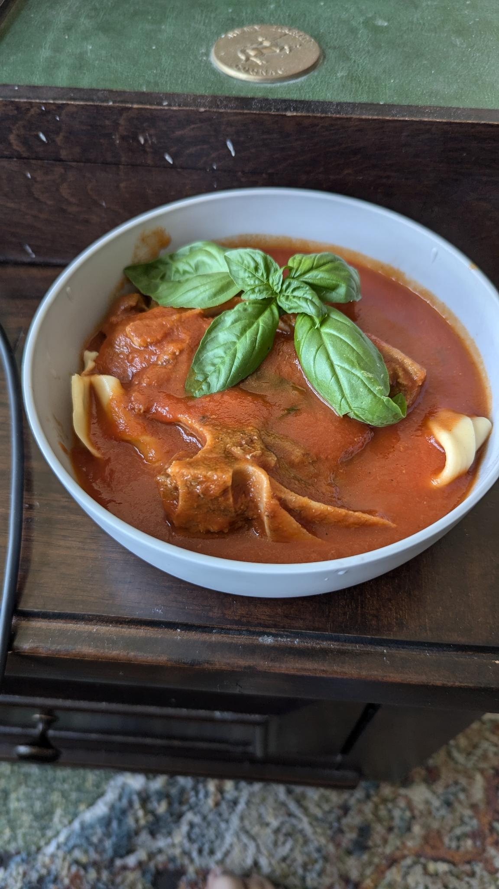

Lamb with sugo

Description
This is a traditional pugliese (the region of itlaly just north of the heel) pasta dish made with a red sauce. It involves slow cooking the lamb in the sauce for a few hours, really allowing the lamb to tenderize and change the flavor of the sauce. It's increadibly easy to make and will really impress anyone you make it for (including yourself 😉)
This is a hearty sauce, so choose a noodle type that can stand up to it. The picture shown used paperdelle (long sheets about an inch wide) but I've made it with fusili, pene, and buccatini. This isn't a hard and fast rule, use whatever pasta you have available or whichever is your favorite.
Ingredients
- 2 16-oz cans of your favorite tomatoe sauce (not puree, or paste. sauce)
- 4 lamb chops
- half of a medium white onion
- 4 searvings of a pasta of your choosing
- 4-6 (or more 😉), fresh basil leaves
- grated parmesan cheese
- 2-3 tbsp olive oil
- salt, black pepper, and red pepper to taste
- optional 2-3 cloves of garlic
Steps
- Dice the medium onion as small as you please ( I prefer smaller, but this will be cooking for a while, so size shouldn't matter so much. If you are adding garlic peel and either crush or chop according to your preference. Crushed garlic will leave behind nice big pieces that you can enjoy when it's cooked.
- Heat a large pot on medium high heat
- While the pot is heating, pat the lamb dry with a paper towel, then cover in olive oil, salt, and pepper to taste.
- When the pot is heated, add enough olive oil to the pan to cover the bottom. Wait a minute or so for the oil to heat up
- With tongs, place the lamb in the pot, evenly spaced, and brown on each side (usually 3-5 minutes per side)
- Once both sides of the lamb are borowned, remove from the pot and place on a clean plate
- Lower the heat to med-low to med and add the onions (and garlic, if using any) to the pot. add salt and pepper to taste.
- Once the onions are translucent, pour both cans of tomatoe sauce into the pot. Replace the lamb into the pot, submerged under the sauce. Add you basil leaves (saving some for a garnish if you want). Add 16oz of water (or one of the empty cans of sauce, how much isn't important, this is just to prevent the sauce from getting too thick from evaporation) and salt and pepper to taste, and heat until the sauce starts bubbling.
- Once the sauce is bubbling, place a wooden spoon or spatula into the pot and place the lid, leaving space for steam to escape. Let cook for 2 hours or until lamb is fall-off-the-bone tender, stirring occasionally to prevent the suace from burning to the pot
- Once sauce is done, remove from heat and cook pasta according to the instructions on the packaging
- Fill 4 bowls with pasta and ladel as much sauce as you want. Place one lamb chop on top, sprinkle with parmesan cheese, and garnish with basil.